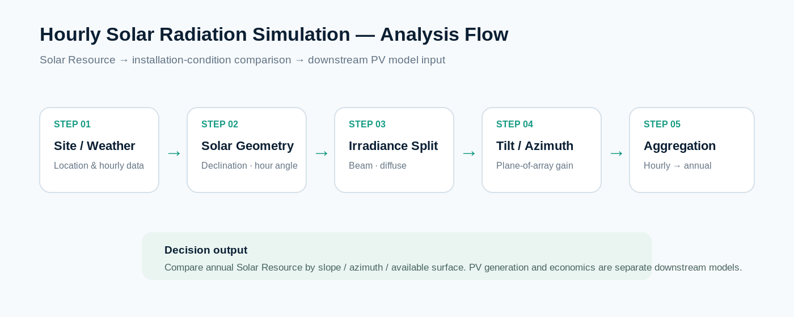
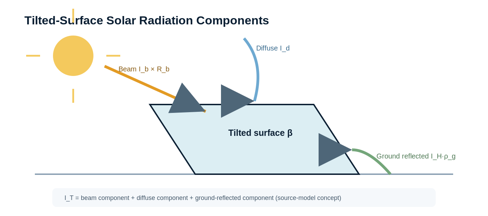
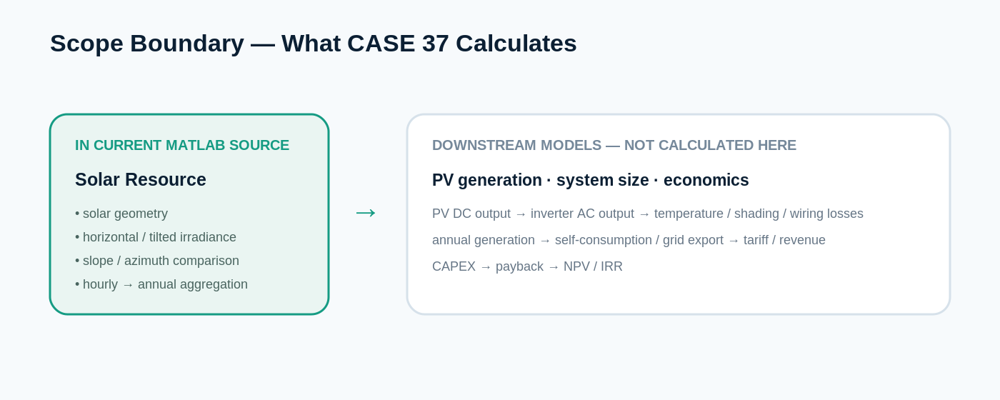

서울·인천·춘천·강릉·대전·대구·광주·여수·울산·부산·제주 등 지역별 기상·일사자료를 입력으로 사용합니다.
CASE 37 · DEEP DIVE · MATLAB SOLAR RESOURCE ANALYSIS
시간단위 Solar Radiation Simulation을 이용한
태양광 설치조건 최적화
지역별 Solar Weather Data와 태양기하 계산을 결합해 365일 × 24시간 = 8,760시간의 수평면·경사면 일사량을 구성하고, 경사각·방위·설치면별 Solar Resource를 비교해 태양광 Array의 설치 Configuration을 검토합니다.
시간해상도8,760시간365일 × 24시간
경사각 비교0° ~ 90°5° 간격 반복
주요 출력Hourly → Annual시간·일·월·연간 집계
분석 범위Solar ResourcePV 발전량·경제성은 후속 모델
01 · OBJECTIVE
패널 용량보다 먼저 Site의 Solar Resource를 확인합니다.
태양광 설비의 용량과 경제성을 결정하기 전에 지역·시간·계절·설치면에 따라 달라지는 일사자원을 정량화합니다. 그 결과를 경사각·방위·설치면 선정의 입력근거로 사용합니다.
위도·경도·표준자오선, 적위, 시간각, 천정각과 설치면 입사각을 계산합니다.
경사각과 방위조건을 반복 계산하고 지붕·벽체 등 실제 설치 가능면의 Solar Gain을 비교합니다.

Site/Weather 선택 → 태양기하 → Beam/Diffuse 구성 → 경사각·방위 반영 → Hourly/Daily/Monthly/Annual 집계 → 설치조건 비교 순서입니다.
02 · MODEL
수평면 일사량을 실제 설치면의 일사량으로 변환합니다.
경사면 총일사량은 직달성분, 확산성분, 지면반사성분으로 구성합니다. 태양 위치와 설치면의 상대각도가 시간마다 달라지므로 8,760시간 계산을 통해 장기 비교기준을 만듭니다.
TILTED-SURFACE SOLAR RADIATION
경사면 총일사량 = 직달성분 + 확산성분 + 지면반사성분
IT = Ib × Rb × η + Id × (1+cosβ)/2 × η + IH × ρg × (1−cosβ)/2 × ηI_T: 경사면 총일사량 · I_b: 직달성분 · I_d: 확산성분 · I_H: 수평면 총일사량 · β: 경사각 · ρ_g: 지면반사율. 원본 코드의 η는 계산에 적용된 효율계수이며 PV 모듈·인버터·시스템 손실 전체를 대표하는 값으로 해석하지 않습니다.

직달·확산·지면반사 성분을 설치면의 경사와 입사조건에 맞춰 결합하는 계산 개념을 도식화했습니다.
03 · AGGREGATION
시간별 계산을 월별·연간 설계 판단으로 연결합니다.
| 분석 단위 | 주요 결과 | 설계 판단 |
|---|---|---|
| Hourly | 시간별 수평면·경사면 일사량 | 발전가능 시간대와 일중 Peak 특성 |
| Daily | 일일 누적 일사량 | 일별 변동과 대표일 비교 |
| Monthly | 월간 누적 일사량 | 계절별 특성과 발전량 모델의 입력조건 |
| Annual | 연간 누적 일사량 | 경사각·방위·설치면 대안 비교 |
04 · CONFIGURATION
경사각 0°~90°와 방위·설치면을 반복 비교합니다.
MATLAB 소스는 경사각을 5° 간격으로 반복하며 연간 누적 Solar Resource를 비교합니다. 방위·벽체·지붕면 분석은 실제 설치 가능면을 비교하는 보조 기준으로 사용합니다.
순간 최대값이 아니라 연간 누적 Solar Resource를 기준으로 경사각 후보를 비교합니다.
동·서·남·북 방향과 Roof의 입사조건 및 Solar Gain을 비교합니다.
지붕 형상, 구조, 음영, 풍하중, 유지관리와 모듈 배치밀도를 함께 고려해야 합니다.

현재 MATLAB 소스가 직접 계산하는 범위는 Solar Radiation과 설치면 Solar Gain입니다. PV 발전량, 설비용량, 자가소비, 전력단가와 투자경제성은 별도 후속 모델입니다.
태양광 설계도 데이터 기반으로 시작할 수 있습니다.
Site의 시간단위 Solar Resource를 먼저 정량화하고, 이후 PV 발전량·용량·경제성 모델로 확장합니다.